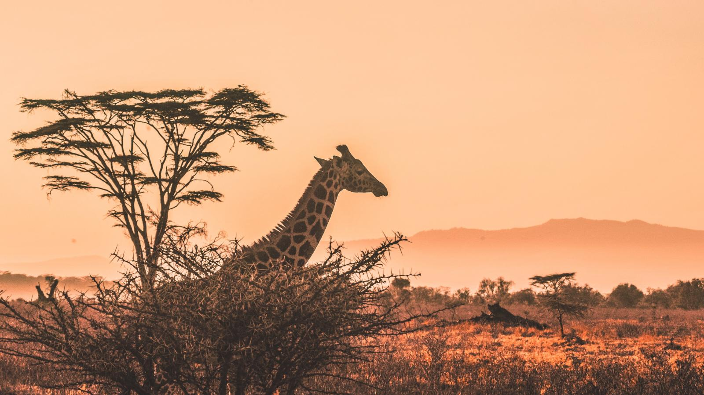
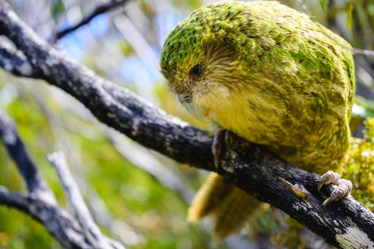
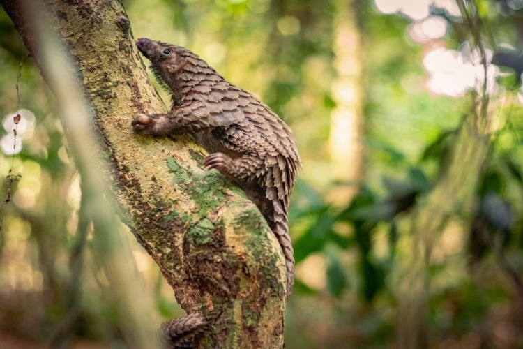
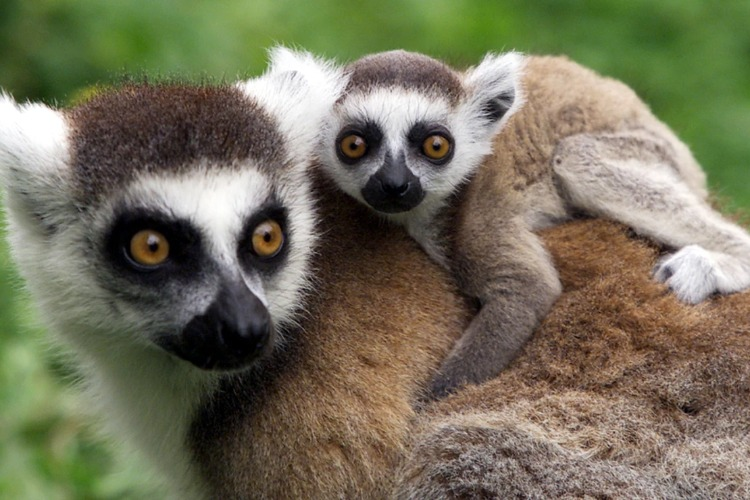
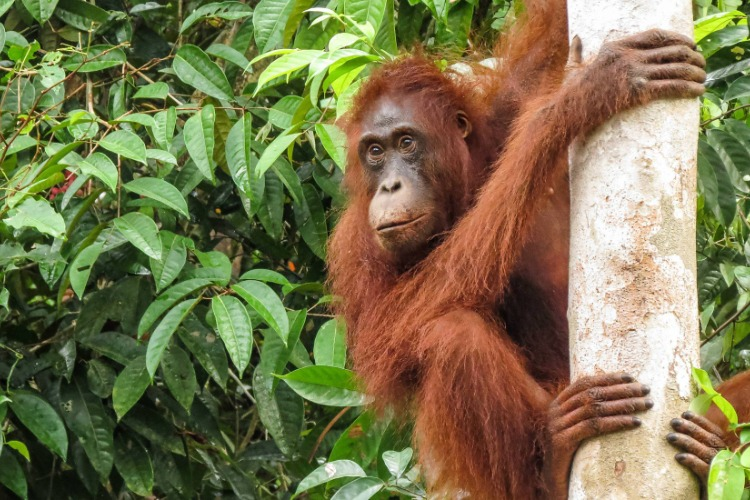
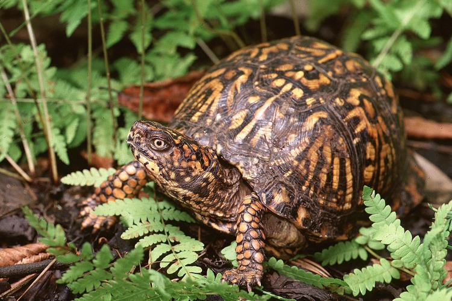

Endangered Animals
Amur leopards

Amur leopards are critically endangered due to habitat loss, primarily from man-made fires, as well as poaching and inbreeding, which is a result of their small population.
Kākāpō

They live only in this small area. The kākāpō is a large, rotund, green parrot. The world's only flightless parrot, kākāpō dwell on the ground and are nocturnal.
Pangolins

It is unknown how many Sunda pangolins and Philippine pangolins are left. Population estimates of the endangered giant ground pangolin and white bellied pangolin (also endangered) are also difficult to determine. However, the IUCN reports that all pangolin populations are decreasing.
Lemurs

There are dozens of lemur species, and around two dozen of them are critically endangered, meaning they face imminent threats to their survival as a species.
Orangutans

Currently, there isn't any accurate population information available on orangutans. We do know that their numbers are decreasing.
Box turtles
